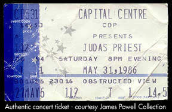

|  |
|
KJ Doughton and Elias Savada take a
look at Jeff Krulick's 1986 documentary Heavy Metal Parking Lot.
- Heavy Metal
Parking Lot - The year was 1986, and the Largo, Maryland Capitol
Center had attracted thousands of headbanging teenagers to worship
featured acts Judas Priest and Dokken - KJ Doughton
- Heavy Metal
Parking Lot - Big screen success has always been just around the
corner for Jeff Krulik and fellow guerrilla filmmaker John Heyn… -
Elias Savada.
|